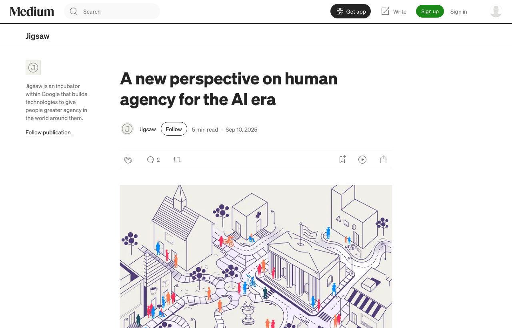
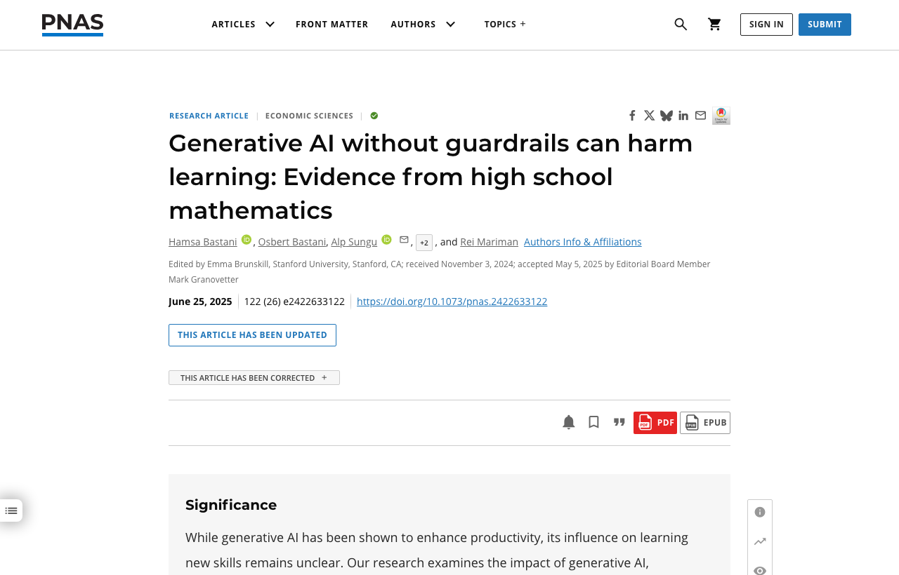
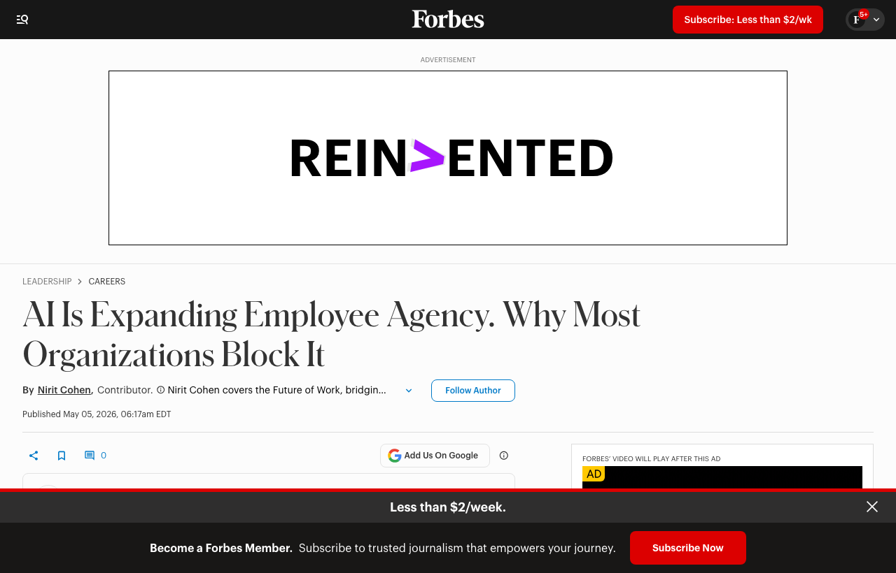
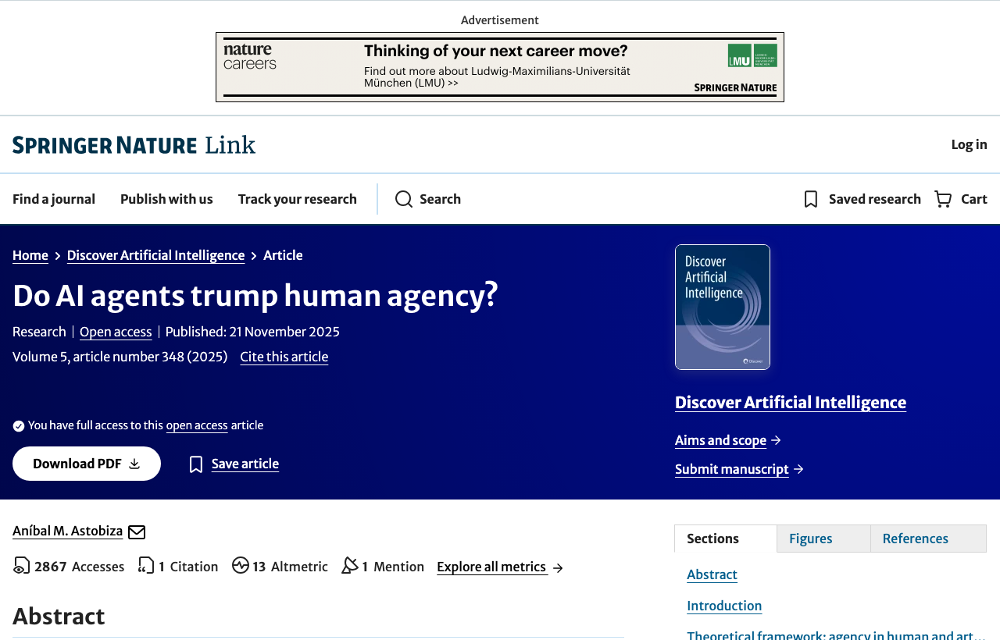
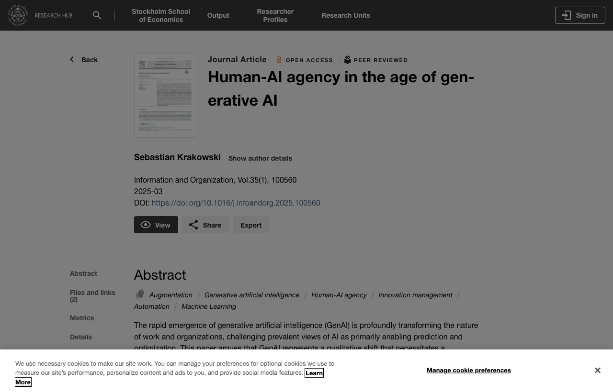
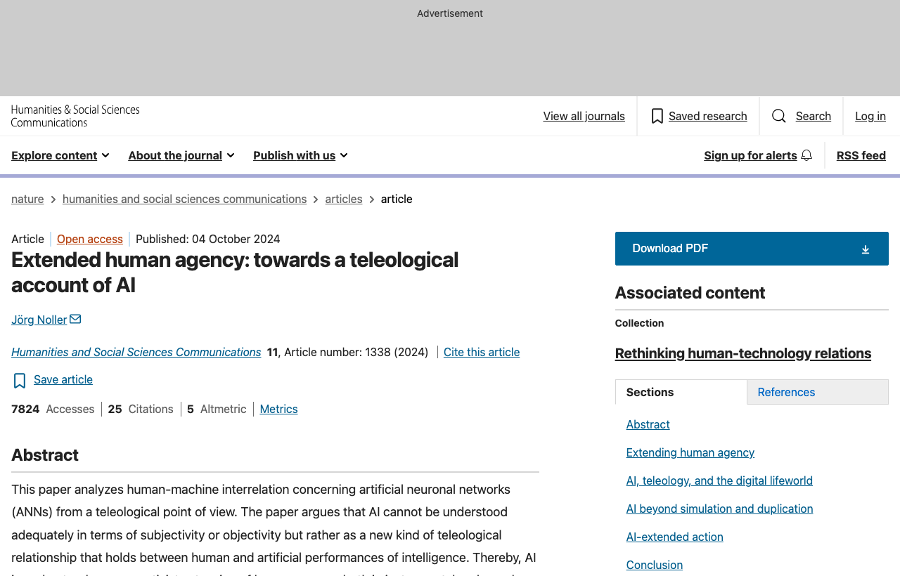
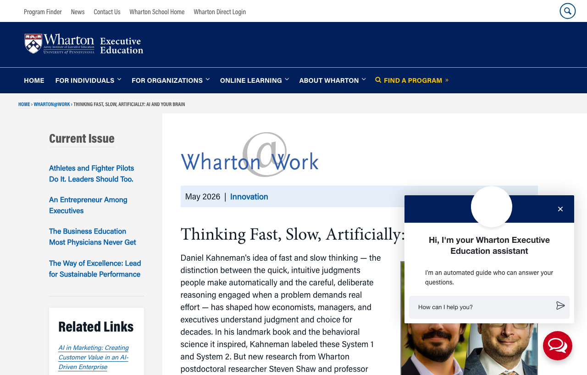
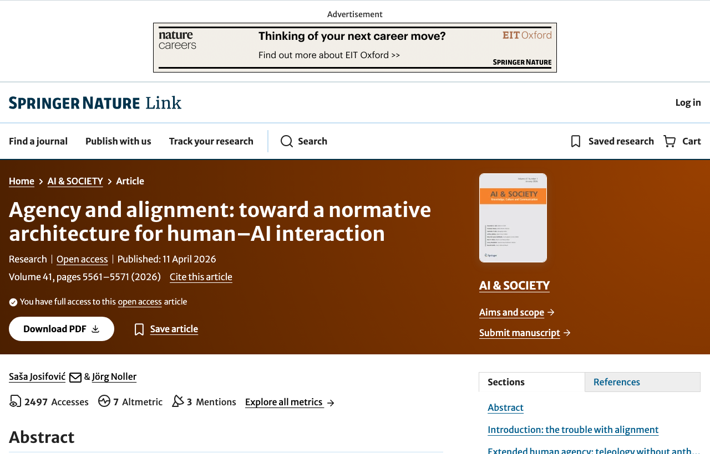
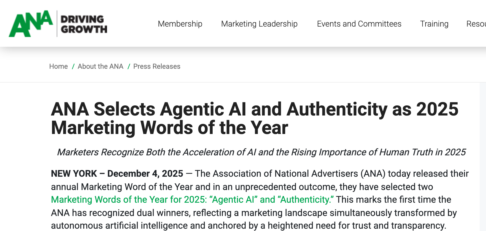
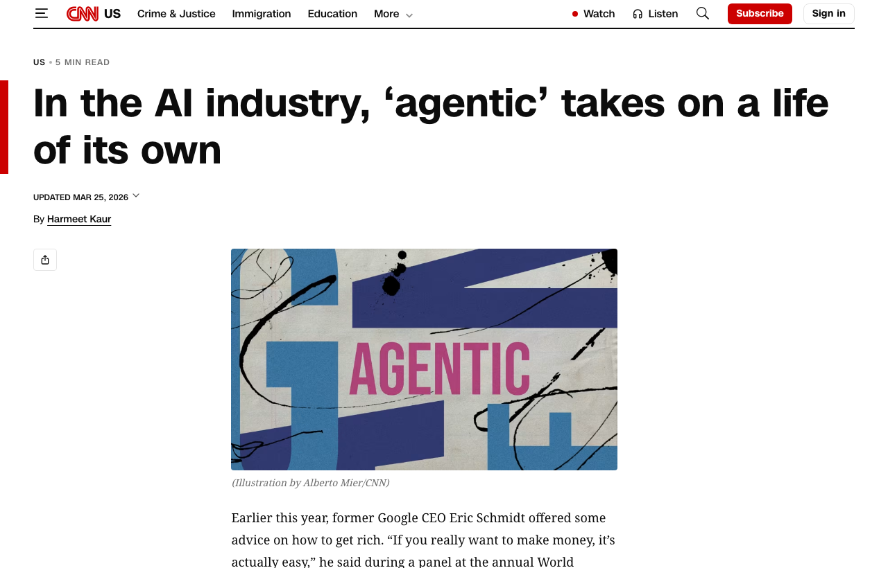

Agency is the AI-era buzzword: "agentic" was CNN's Word of the Week in March 2026, and the Association of National Advertisers picked "agentic AI" as a 2025 Marketing Word of the Year.









